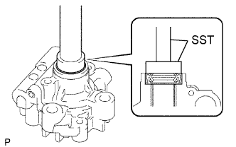
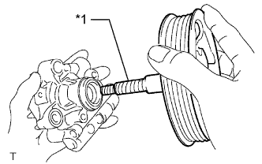
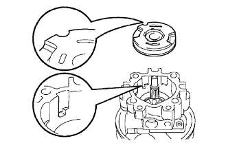
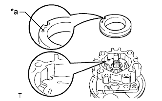
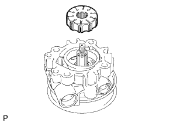
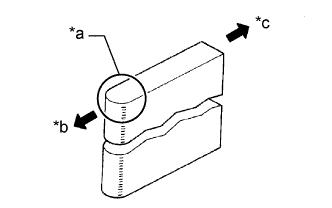
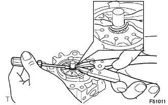
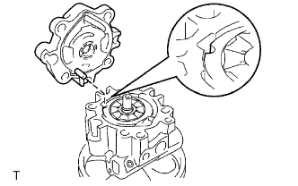
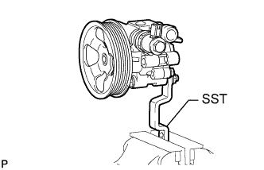
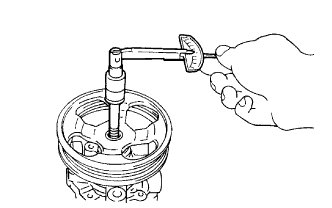

ЛОПАСТНОЙ НАСОС (для моделей с 2TR-FE) > ПОВТОРНАЯ СБОРКА |
| 1. УСТАНОВИТЕ САЛЬНИК КОЖУХА ЛОПАСТНОГО НАСОСА |
Покройте кромку нового сальника кожуха лопастного насоса универсальной консистентной смазкой.
|  |
С помощью SST и пресса запрессуйте новый сальник.
| 2. УСТАНОВИТЕ ВАЛ СО ШКИВОМ |
Смажьте вал жидкостью для механизма рулевого управления с усилителем.
|  |
Осторожно вставьте вал лопастного насоса со шкивом.
| *1 | Защитная клейкая лента |
| 3. УСТАНОВИТЕ ПЕРЕДНЮЮ БОКОВУЮ ЗАЩИТНУЮ ШАЙБУ ЛОПАСТНОГО НАСОСА |
Покройте новое кольцевое уплотнение № 2 жидкостью для механизма рулевого управления с усилителем.
 |
Установите кольцевое уплотнение № 2 на передний кожух.
Покройте новое кольцевое уплотнение № 1 жидкостью для механизма рулевого управления с усилителем.
 |
Установите кольцевое уплотнение № 1 на переднюю боковую защитную шайбу.
|  |
Установите переднюю боковую защитную шайбу на передний кожух, совместив полукруглые вырезы обеих деталей.
| 4. УСТАНОВИТЕ СТОПОРНОЕ КОЛЬЦО ЛОПАСТНОГО НАСОСА |
|  |
Установите стопорное кольцо лопастного насоса на передний кожух лопастного насоса, направив нанесенную метку вверх и совместив полукруглые вырезы обеих деталей.
| *a | Нанесенная метка |
| 5. УСТАНОВИТЕ РОТОР ЛОПАСТНОГО НАСОСА |
|  |
Установите ротор лопастного насоса в передний кожух лопастного насоса.
Смажьте 10 пластин лопастей насоса жидкостью для механизма рулевого управления с усилителем.
|  |
Установите 10 пластин лопастей лопастного насоса.
| *a | Закругленный конец |
| *b | Наружу |
| *c | Внутрь |
| 6. УСТАНОВИТЕ СТОПОРНОЕ КОЛЬЦО ВАЛА ЛОПАСТНОГО НАСОСА |
|  |
При помощи отвертки и съемника стопорных колец установите новое стопорное кольцо на вал со шкивом.
| 7. УСТАНОВИТЕ ЗАДНИЙ КОЖУХ ЛОПАСТНОГО НАСОСА |
|  |
Покройте новое кольцевое уплотнение жидкостью для механизма рулевого управления с усилителем и установите его на задний кожух.
Совместите штифт заднего кожуха с отверстием, образованным полукруглыми вырезами стопорного кольца, передней боковой защитной шайбы и переднего кожуха. Затем закрепите задний кожух 4 болтами.
| 8. ЗАКРЕПИТЕ ЛОПАСТНОЙ НАСОС В СБОРЕ |
|  |
С помощью SST закрепите лопастной насос в тисках между алюминиевыми пластинами, как показано на рисунке.
| 9. ПРОВЕРЬТЕ СУММАРНЫЙ ПРЕДНАТЯГ |
|  |
Убедитесь, что насос работает плавно, без постороннего шума.
Временно вверните технологический болт.
| Параметр / Устройство | Заданные условия |
| Диаметр резьбы | 10 мм (0,394 дюйма) |
| Шаг резьбы | 1,25 мм (0,0492 дюйма) |
| Длина болта | 50 мм (1,97 дюйма) |
С помощью динамометрического ключа проверьте крутящий момент насоса.
| 10. УСТАНОВИТЕ МАСЛЯНЫЙ БАЧОК ЛОПАСТНОГО НАСОСА В СБОРЕ |
Смажьте новое кольцевое уплотнение жидкостью для механизма рулевого управления с усилителем и вставьте его в бачок лопастного насоса.
Закрепите бачок лопастного насоса 3 болтами на лопастном насосе.